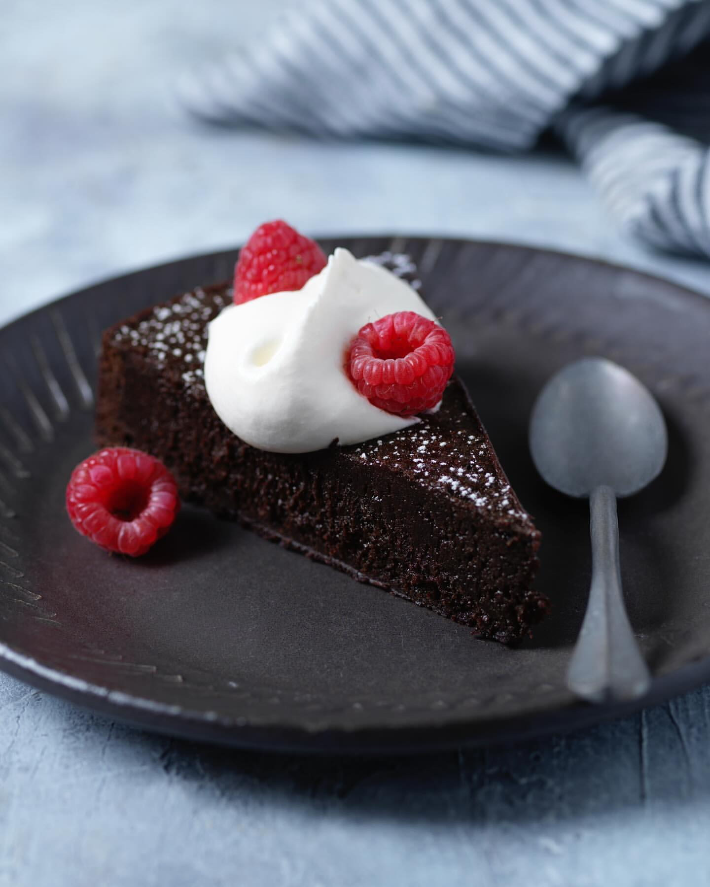

Kladdkaka
yttre och härligt sega, nästan rinnande inre. Med sin intensiva chokladsmak och korta gräddningstid har denna fylliga chokladdröm blivit en självklar stjärna på det svenska fikabordet. Det bästa av allt är dess enkelhet – den svängs snabbt ihop med basskafferiets ingredienser och kräver varken bakpulver eller avancerade köksmaskiner.
Ingredienser
- Mjöl
- Kakao
- Smör
- Ägg
- Strösocker
- Vaniljsocker
- Salt
- Ströbröd
Instruktioner
- Sätt ugnen på 175° eller 160° varmluft.
- Smält smöret i en kastrull. Lyft av kastrullen från plattan.
- Rör ner socker och ägg, blanda väl. Rör ner övriga ingredienser så att allt blir väl blandat.
- Häll smeten i en smord och bröad form med löstagbar kant, ca 24 cm i diameter.
- Grädda mitt i ugnen ca 15 min. Kakan är klar när kanterna är fasta samt torra och ytan har fått en tunn skorpa, men mitten är fortfarande dallrig och kladdig.
- Låt kakan kallna innan du pudrar över florsocker. Servera med vispad grädde, glass, frukt, bär eller något annat du tycker om.
